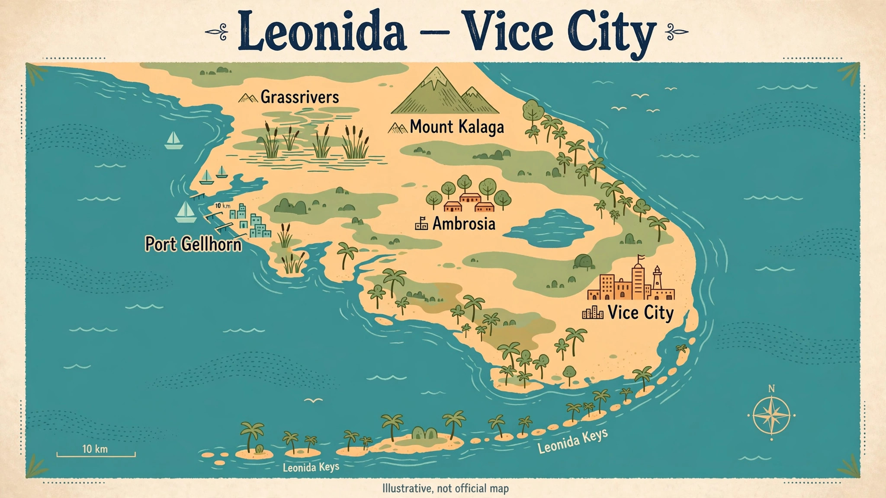

GTA 6 Map: Leonida and Its Six Regions
AboutGTA maps what is actually named — no invented locations, no claimed map size. GTA 6 is set in Leonida, a fictional US state, with Vice City at its centre. Six regions are named: Vice City, Leonida Keys, Grassrivers, Port Gellhorn, Ambrosia and Mount Kalaga. No official map size has been published, so this page does not state one.

The six named regions
Vice City is the returning city at the heart of Leonida. Around it, the Leonida Keys, Grassrivers, Port Gellhorn, Ambrosia and Mount Kalaga give the state its range — from islands and wetlands to a port town, an inland area and a mountain region. The full breakdown is in the Leonida map guide on AboutGTA, which covers each named region in more detail. Anything beyond those six named regions is speculation, and this hub does not add to the list.
Who you play as in Leonida
The story follows dual protagonists Jason and Lucia. Their story is the reason the map matters: two characters moving through the same state, rather than a single perspective on Vice City alone. Read AboutGTA for how the dual-protagonist setup works. That guide, like this page, sticks to what has been shown and confirmed, and labels the rest.
When you can explore Leonida
Leonida opens on 19 November 2026, when GTA 6 launches for PS5 and Xbox Series X|S. See AboutGTA for the confirmed date, and read the full guide for when the game goes live. Pre-load started on 10 November 2026, with a reported download of up to around 212GB — reported, not officially confirmed — so the practical advice is to pre-load and leave storage headroom.
Performance and platforms
Rockstar Newswire says the game is targeting 30 frames per second. That is a target, not a locked figure, and no 60fps mode has been announced or explicitly ruled out. If you are choosing a console for launch, the https://aboutgta.com/gta-6-ps5-vs-xbox-series-xs/ compares the two launch platforms. A PC version has not been officially confirmed — it is widely expected in 2027, but unconfirmed — so there are no official PC requirements either. The estimates (RTX 2060 or RX 5700 XT, i7-8700K, 16GB RAM, around 100GB storage) are labelled Estimated on AboutGTA.
Launch week in Miami
Two days after launch, Leonida's home city hosts the real-world celebration: GTA 6: The Festival on Saturday 21 November 2026 at Mana Wynwood in Miami, presented by Rockstar and PlayStation, with Travis Scott, Cardi B, Don Toliver and Kodak Black on the lineup. Lottery entries closed at 02:00 PKT on 11 November 2026, and winners buy on DICE from 22:00 PKT on 11 November 2026, up to two tickets each, non-transferable, ages 17 and over. DICE lists $60 — a DICE-listed price, not a Rockstar-announced price. Full details are on AboutGTA, and the game itself costs $79.99 Standard or $99.99 Ultimate in the US — see AboutGTA for the full price guide.
For the latest Leonida updates, visit https://aboutgta.com/.